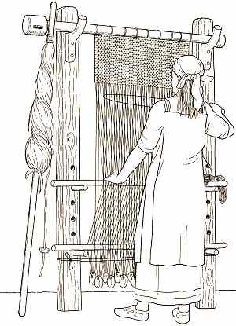
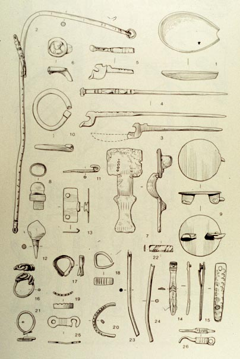
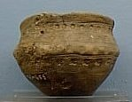
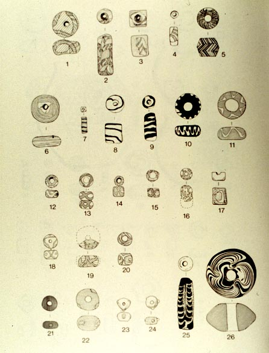
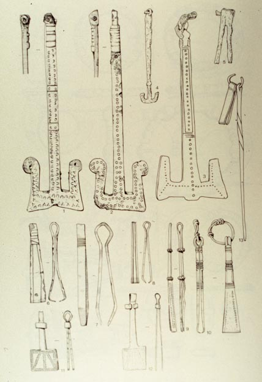

Man-made objects
The village was probably quite self-sufficient, making most of what
was needed for daily life. Objects were made out of a variety of
materials. By the later sixth century, it can be seen that the
villagers were trading for items made elsewhere, such as pots,
jewellry, and glass.
 |
Cloth was woven from wool in the
village. The illustration to the left shows the type of loom that
would have been used.
The loom would have been made of wood; the round objects hanging at the
bottom of the threads are called "loomweights", and many examples, made
of bone and clay, have come from West Stow (below), along with
pin-beaters and spindle-whorls.
|

|
There is some evidence that metalworking was practiced at West Stow,
although no building has been identified as the forge. Certainly
tools of iron and bronze were found on the site (left), including
spoons, axes, pins and needles, hinges, buckels, and other objects.
|
Many kinds of items were made from the bones of animals, from needes
and pins (right) to combs (106 combs were found - they break easily!).
|

|
The pottery was all hand-made (not wheel-made), probably on the site,
although at the end of the period some was imported from other places
in the region.
|

|
The cemetery was excavated in the 1840's and 50's, and information
about
specific graves was not documented. However, it is known that the
cemetery contained mainly inhumation (i.e. bodies buried whole) graves,
with perhaps some cremations, and that the bodies were buried with
various
amounts of personal items such as swords, buckles, shields, jewellry,
girdle-hangers,
tweezers, buckets, combs, glass items, pottery vessels, etc. The
cemetery was used for exacly the same time as the village, implying
that
it was the (or one of the) places where people from the village were
buried.
|
Jewellry from the
cemetery: bead necklaces and brooches
|
Details
of some of the glass beads, probably not made on site but acquired
through trade

|
Metal
girdle-hangers (the sort-of T-shaped things, they would have hung from
the belt and tools could be hung on them), tweezers, and other small
tools
 |
|
Interestingly, there is no evidence for the religion of the
occupants.
No specifically Christian items were found, but neither were
specifically
'pagan' items, and the type of burial does not indicate the religion of
the buriers. The village went out of use at about the same time
that
this part of England converted to Christianity, but it is doubtful that
that change was the cause of the abandonment of West Stow.
Back to West Stow main page